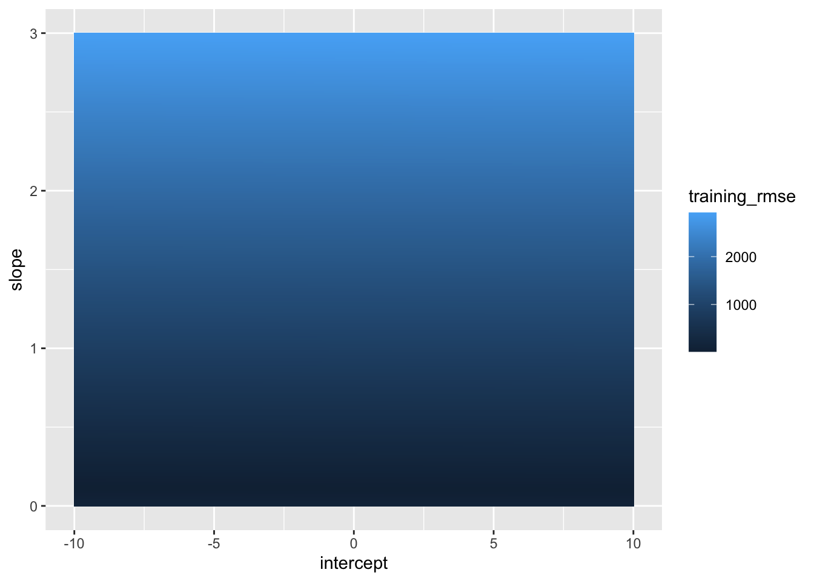

Make sure you can identify what each of these terms mean! Specifically, you should be able to identify the loss function, the predictor, the empirical risk, the model class, and the minimizer.
Recall that our overall strategy for machine learning is this:
Consider a class / family of models
Try to have enough data, and sufficiently representative data, that past performance (training error) is a reasonable proxy for future performance (test error) within that model class
In the absence of other information, pick the model that has the best past performance (empirical risk minimization) and hope that it will do well going forward
Ceteris paribus, a larger model class has more upside (best case better) and more downside (worse case worse) than a simpler model class. With enough data, we hope to consistently find the ‘good’ parts of the bigger model family and to avoid the ‘bad’ parts.
Fitting OLS
Recall that Ordinary Least Squares (OLS) is the intersection of empirical risk minimization (ERM), the class of linear models, and the squared error loss. Formally:
where \(\{(\bx_i, y_i)\}_{i=1}^n\) are the training data. If we recall that all linear regression models (\(\Fcal_{\text{Linear Regression Models}}\)) can be identified with the set of feature weights (coefficients), this is equivalent to solving the problem:
where \(\bbeta = (\beta_1, \beta_2, \dots, \beta_p)\) is a vector of regression weights and \(\bbeta^{\top}\bx = \beta_1x_1 + \beta_2x_2 + \dots + \beta_px_p\).
Computers don’t work so well with the first format - a function is a bit of a mathematical abstraction - but the second format (solving for a set of specific numbers) is very easy for computers, so this is what gets used in practice, but it is functionally just a different way of expressing the same problem.
In fact, solving this problem - the least squares problem - is ubiquitous in mathematics, so lots of work has been done on the best way to solve this and we can benefit from this. In R, we use the lm() built-in, while Python gives us np.linalg.solve() among others. R‘s lm() provides several ’quality-of-life’ improvements that np.linalg.solve() lacks, so we’ll start with some R examples before coming back to Python.
To demonstrate this, I’ve uploaded a small csv file with two columns:
Usage, the amount of electricity (measured in kWh) used by a single family home over time periods lasting (roughly) one month each
Bill, the bill (in US dollars) for that same time period
Rows: 50 Columns: 2
── Column specification ────────────────────────────────────────────────────────
Delimiter: ","
dbl (2): Usage, Bill
ℹ Use `spec()` to retrieve the full column specification for this data.
ℹ Specify the column types or set `show_col_types = FALSE` to quiet this message.
From background knowledge, you might expect this to be linear (roughly $ = * ) and indeed it is roughly linear, but not perfectly so.1 Despite this, we can fit a line using the lm() function:
Call:
lm(formula = Bill ~ Usage, data = TX_POWER)
Coefficients:
(Intercept) Usage
-3.9066 0.1112
As an economic matter, this model is immediately a bit implausible: the negative intercept, if taken too literally, would imply that if we used no power, the utility company would pay us $3.90. Why is this happening?
Statisticians would usually say something like “This data is a bit ‘noisy’ / random” and that causes error in the model. It is true that there are many factors that impact billing beyond just plain usage. Here we have noise (or error) that arises not because the underlying process is inherently stochastic, but because there are aspects we don’t include in our model. Whether we should think about about this as pure ‘noise’ or as something a bit more systematic is a question we will return to later in the course.
For now, let’s start by making predictions from this model. Our model was designed to have minimal training error, which we can compute directly:
So our average squared prediction error is 217.17! This is not great, but recall that the units here are “squared dollars”, so it’s a bit unnatural. We get a better intuition by computing the root mean squared error instead:
Ok - so we’re off by about $14.74 each month. Certainly not perfect, but given that the ‘baseline’ standard deviation of power bills is $61.69, we’ve certainly achieved some predictive power.
OLS is supposed to give us the predictions with the best training error, but how can we verify this? If we don’t trust the math, we can try out a wide range of coefficients and see what actually gives the best performance. To do this, we need a bit of brute force calculations:
library(ggplot2)compute_rmse<-function(intercept, slope){y_hat<-intercept+slope*TX_POWER$UsageRMSE(y_hat, TX_POWER$Bill)}# Create a 'grid' of many potential coefficientspotential_coefficients<-expand_grid(intercept=seq(-10, 10, length.out=401), slope=seq(0, 3, length.out=401))# Compute RMSEs for all coefficient combinations and plot resultspotential_coefficients|>mutate(training_rmse =map2_dbl(intercept, slope, compute_rmse))|>ggplot(aes(x=intercept, y=slope, fill=training_rmse))+geom_tile()

}
Footnotes
Several reasons: inputs to the power grid change in price, aggregate demand changes over time and prices balance out supply and demand, ‘base rate’ charges increase over time to maintain the grid, etc.↩︎